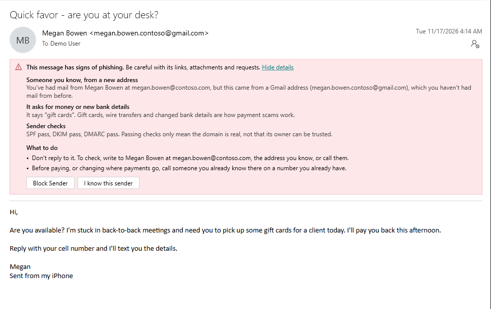
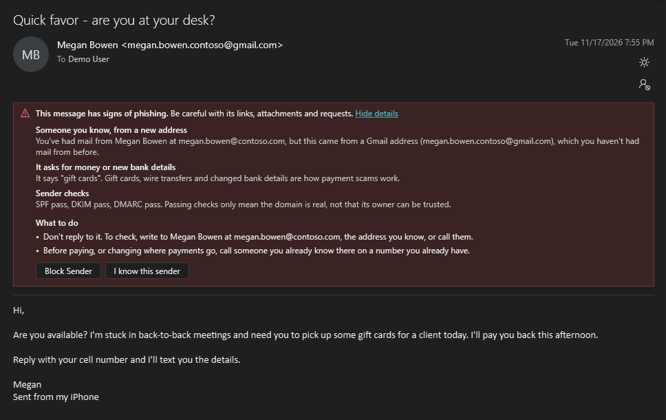
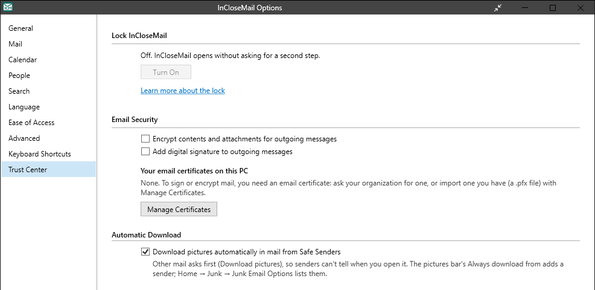
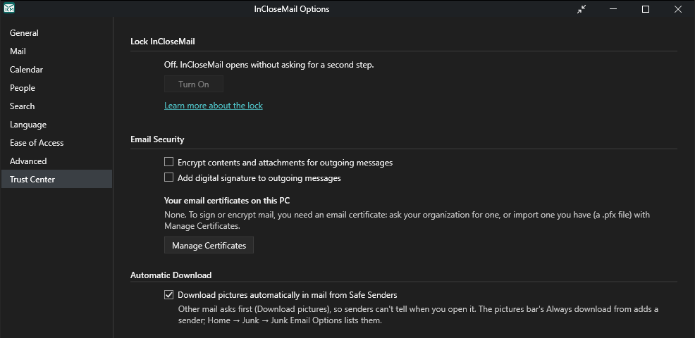

- “Why is this suspicious?” A plain-language explanation for messages that look like phishing, with Block Sender and I know this sender.
- People to protect: outside mail that uses your CEO’s name, or another you list, is flagged, even when the name is misspelled by a letter. Outside mail that claims to be internal or “verified” is flagged too.




- A second look before sending: forgotten attachments, outside recipients and replies to many people.
- Read-only mode for any account you want to keep as it is, or allow only the kinds of change you choose.
- S/MIME: read signed and encrypted mail, and sign and encrypt your own.
- Pictures from the web blocked until you download them (or always download from a sender or their domain, who join your Safe Senders), scripts off, and attachments that can run code blocked, as in Outlook.




- Continuous Access Evaluation: when an administrator ends your sessions, InCloseMail notices within minutes.
- Stay signed in safely: sign-in through Windows, with tokens and the local copy of your mail encrypted on your PC. See the privacy policy.
Missing something you used in Outlook? Choose Help → Suggest a Feature in the app. Found a bug? Choose Help → Report a Bug.